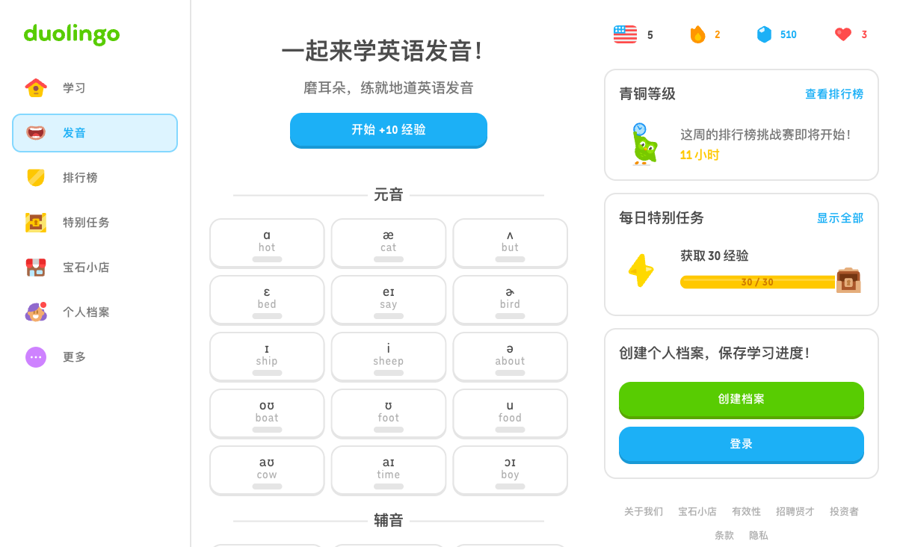
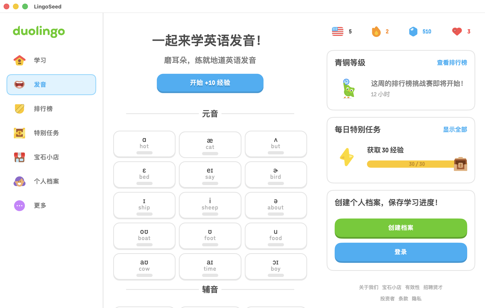

真实字体、卡面与按下反馈
冻结零进度原版、前一批候选及当前候选；原生含标题栏，验收使用实测裁切与缩放。整图仍失败。
冻结原版

前一批：CSS 500直接当字体轴500、卡面64/阴影4
当前：实际字体轴400、字距0.8、卡面66/阴影2、circular
实际按住与释放
原版按住（当前在线非零进度，不冒充完整同状态）
Swift按住：实际AX下移2点

Swift释放：实际AX恢复
 Swift按住：实际AX下移2点
Swift按住：实际AX下移2点